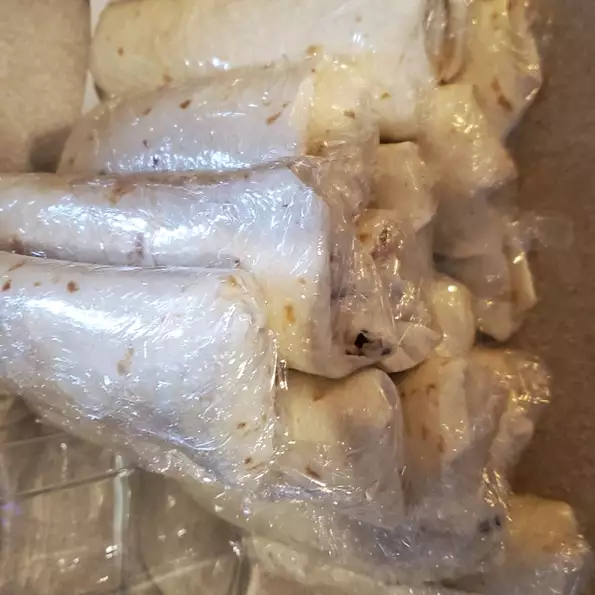

Lunch Wraps

Ingredients
- 2 cups uncooked brown rice
- 4 cups water
- 4 (15 ounce) cans black beans
- 1 (10 ounce) can whole kernel corn
- 2 (15.5 ounce) cans pinto beans
- 1 (10 ounce) can diced tomates and green chilies
- 16 (10 inch) flour tortillas
- 1 pound shredded pepperjack cheese
Steps
- Combine rice and water in a saucepan, and bring to a boil. Reduce heat to low, cover, and simmer for 35 to 40 minutes, or until tender. Remove from heat, and cool.
- Place black beans and pinto beans into a colander or strainer, and rinse. Add corn and diced tomatoes with green chilies, and toss to mix. Transfer to a large bowl, and mix in rice and cheese.
- Divide the mixture evenly among the tortillas, and roll up. Wrap individually in plastic wrap, place into a large freezer bag, and freeze. Reheat as needed in the microwave for lunch or snacks.